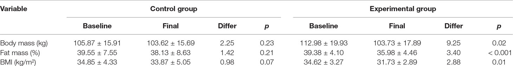
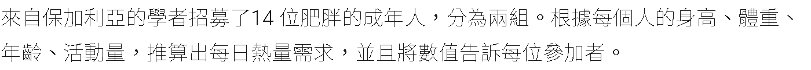
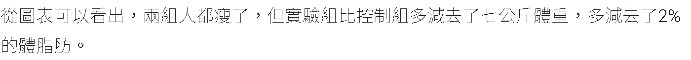
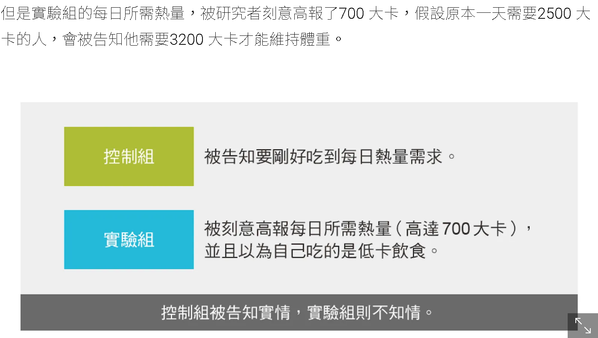

教學習作：如何運用模擬研究解析小樣本研究的證據力
習作目標
標題具有啟發性的小樣本研究充斥許多科學文獻，在多數科學人士體認可重製危機的現在(Baker 2016)，學習根據論文的統計資訊，評估研究證據強度，能增益研究者識讀研究論文品質，進而增加設計嚴謹研究的能力。
本文使用英國格拉斯哥大學心理學系DeBruine教授開發的R套件faux(DeBruine 2021)，示範如何根據 Panayotov (2019) 報告的減重效用統計資訊，以模擬重製實驗資料估計統計考驗力，評估這份論文的證據強度。
實驗參數
Panayotov (2019) 的原始論文是以cc授權的開放取用論文，不確定有事前預先註冊，未提供原始資料。論文作者測試BMI值屬於肥胖區間的14位成年人，分派到實驗組與控制組各7人。兩組參與者進行八週體重控制課程，飲食菜單與運動課表相同，實驗組的處置是被告知菜單是低卡飲食，控制組則告知確實資訊。論文作者假設實驗組經過八週課程，能減重約6公斤(“Theoretically this should cause a weight loss of about 6 kg in 8 weeks.”)。
Panayotov的測量指標有體重(kg)、體脂肪比例(%)、BMI(kg/m^2)，在課程開始(baseline)與課程結束(final)兩個時間測量。減重效用的檢驗方式是以t檢定，確認兩組參與者在兩個時間的各項指標差異，顯著水準是0.05，論文未註明檢定方式是單尾(one tail)或雙尾(two tail)。統計資訊如下表。

Figure 1: 實驗開始與結束測量的參與者體重指數分組平均值、標準差、t檢定p值。取自原始論文Table 2。
模擬資料測試
減重效用是實驗組課程前後在三種指標的差異，因此採用原始論文Table 2提供的統計資訊，運用faux統計製作模擬資料。
首先以體重資訊示範如何製造模擬資料。前後測資料來自同一位觀察對象，資料之間預設有相關性，一般設定相關性有0.5，代表前後時間的測量來自不完全彼此獨立，也不完全相關的狀況。
weight_dat <- sim_design(
n = 7, ## 受試者人數
within = list(cond = c("baseline", "final")), ## 獨變項設定
mu = data.frame(baseline=112.98, final=103.73), ## 基準及結束平均值
sd = data.frame(baseline=19.93, final=17.89), ## 基準及結束標準差
r=0.5,
dv="weight",
empirical=TRUE,
long = TRUE
)
get_params(weight_dat) %>% knitr::kable()
| n | var | baseline | final | mean | sd |
|---|---|---|---|---|---|
| 7 | baseline | 1.0 | 0.5 | 112.98 | 19.93 |
| 7 | final | 0.5 | 1.0 | 103.73 | 17.89 |
測試一次模擬資料的分析:
# paired-samples t-test
t.test(weight ~ cond, weight_dat, paired = TRUE)
##
## Paired t-test
##
## data: weight by cond
## t = 1.2886, df = 6, p-value = 0.245
## alternative hypothesis: true difference in means is not equal to 0
## 95 percent confidence interval:
## -8.314993 26.814993
## sample estimates:
## mean of the differences
## 9.25
準備取出t檢定報表的自訂函式:
analyse <- function(data) {
t.test(weight ~ cond, data, paired = TRUE) %>%
broom::tidy()
}
製造一千次重製實驗的資料：
weight_dat <- sim_design(
n = 7,
within = list(cond = c("baseline", "final")),
mu = data.frame(baseline=112.98, final=103.73),
sd = data.frame(baseline=19.93, final=17.89),
r=0.5,
dv="weight",
# empirical=TRUE,
long = TRUE,
rep=1000
)
分析一千次重製實驗資料：
weight_sim <- weight_dat %>%
mutate(analysis = map(data, analyse)) %>%
select(-data) %>%
unnest(analysis)
head(weight_sim) %>% knitr::kable()
| rep | estimate | statistic | p.value | parameter | conf.low | conf.high | method | alternative |
|---|---|---|---|---|---|---|---|---|
| 1 | 10.685707 | 2.5782957 | 0.0418653 | 6 | 0.5445184 | 20.826896 | Paired t-test | two.sided |
| 2 | 3.560315 | 1.7130931 | 0.1375304 | 6 | -1.5250927 | 8.645723 | Paired t-test | two.sided |
| 3 | 1.312591 | 0.2122573 | 0.8389334 | 6 | -13.8190195 | 16.444202 | Paired t-test | two.sided |
| 4 | 2.109562 | 0.3506974 | 0.7378000 | 6 | -12.6094312 | 16.828555 | Paired t-test | two.sided |
| 5 | 14.168492 | 1.9477947 | 0.0993623 | 6 | -3.6306383 | 31.967622 | Paired t-test | two.sided |
| 6 | 12.328009 | 2.2493344 | 0.0655011 | 6 | -1.0828702 | 25.738888 | Paired t-test | two.sided |
總結模擬結果的考驗力：
weight_power <- weight_sim %>%
mutate(sig = p.value < .05) %>%
summarise(power = mean(sig)) %>%
pull(power)
總計考驗力約0.189。以上模擬結果說明，如果前後測量不完全彼此獨立，也不完全相關，找相同條件的人士進行課程，體重減少9公斤的成功機會大約是20%。
減重效用考驗力估計
不確定前後測量的獨立或關聯程度，我們擴展以上展示的方法，製造前後測量相關係數是0.1, 0.2, 0.3, 0.4, 0.5, 0.6, 0.7, 0.8, 0.9等九種1000次模擬結果，再總計各項測量指標的考驗力。
體重
製造模擬資料：
r_cand <- seq(.1,.9,.1)
weight_dat_list <- map(r_cand,
function(x) sim_design(
n = 7, ## 受試者人數
within = list(cond = c("baseline", "final")), ## 獨變項設定
mu = data.frame(baseline=112.98, final=103.73), ## 基準及結束平均值
sd = data.frame(baseline=19.93, final=17.89), ## 基準及結束標準差
r = x, ## 基準及結束相關係數
dv="weight",
long = TRUE,
rep=1000
)) %>%
set_names(nm=r_cand)
分析並總計各種相關係數條件的考驗力：
weight_sim_power <- NULL
for(i in 1:length(weight_dat_list)){
weight_sim_power <- c(weight_sim_power,weight_dat_list[[i]] %>%
mutate(analysis = map(data, analyse)) %>%
select(-data) %>%
unnest(analysis) %>%
mutate(sig = p.value < .05) %>%
summarise(power = mean(sig)) %>%
pull(power))
}
names(weight_sim_power) <- r_cand
knitr::kable(t(weight_sim_power))
| 0.1 | 0.2 | 0.3 | 0.4 | 0.5 | 0.6 | 0.7 | 0.8 | 0.9 |
|---|---|---|---|---|---|---|---|---|
| 0.131 | 0.149 | 0.136 | 0.17 | 0.182 | 0.227 | 0.278 | 0.404 | 0.662 |
體重測量的模擬資料分析結果顯示，前後測量相關性達到0.9時，相同條件的再現成功率只有66%。需注意前後測量的高相關性，代表兩個時間的測量不是獨立事件。
體脂肪比例
製造模擬資料：
r_cand <- seq(.1,.9,.1)
mass_dat_list <- map(r_cand,
function(x) sim_design(
n = 7, ## 受試者人數
within = list(cond = c("baseline", "final")), ## 獨變項設定
mu = data.frame(baseline=39.38, final=35.98), ## 基準及結束平均值
sd = data.frame(baseline=4.10, final=4.46), ## 基準及結束標準差
r = x, ## 基準及結束相關係數
dv="mass",
long = TRUE,
rep=1000
)) %>%
set_names(nm=r_cand)
analyse <- function(data) {
t.test(mass ~ cond, data, paired = TRUE) %>%
broom::tidy()
}
分析並總計各種相關係數條件的考驗力：
mass_sim_power <- NULL
for(i in 1:length(mass_dat_list)){
mass_sim_power <- c(mass_sim_power,mass_dat_list[[i]] %>%
mutate(analysis = map(data, analyse)) %>%
select(-data) %>%
unnest(analysis) %>%
mutate(sig = p.value < .05) %>%
summarise(power = mean(sig)) %>%
pull(power))
}
names(mass_sim_power) <- r_cand
knitr::kable(t(mass_sim_power))
| 0.1 | 0.2 | 0.3 | 0.4 | 0.5 | 0.6 | 0.7 | 0.8 | 0.9 |
|---|---|---|---|---|---|---|---|---|
| 0.255 | 0.294 | 0.309 | 0.353 | 0.428 | 0.512 | 0.609 | 0.753 | 0.966 |
體脂肪比例測量的模擬資料分析結果顯示，前後測量相關性達到0.9時，相同條件的再現成功率可達到95%。需注意前後測量的高相關性，代表兩個時間的測量不是獨立事件。
BMI
製造模擬資料：
r_cand <- seq(.1,.9,.1)
BMI_dat_list <- map(r_cand,
function(x) sim_design(
n = 7, ## 受試者人數
within = list(cond = c("baseline", "final")), ## 獨變項設定
mu = data.frame(baseline=34.62, final=31.73), ## 基準及結束平均值
sd = data.frame(baseline=3.27, final=2.89), ## 基準及結束標準差
r = x, ## 基準及結束相關係數
dv="BMI",
long = TRUE,
rep=1000
)) %>%
set_names(nm=r_cand)
analyse <- function(data) {
t.test(BMI ~ cond, data, paired = TRUE) %>%
broom::tidy()
}
分析並總計各種相關係數條件的考驗力：
BMI_sim_power <- NULL
for(i in 1:length(BMI_dat_list)){
BMI_sim_power <- c(BMI_sim_power,BMI_dat_list[[i]] %>%
mutate(analysis = map(data, analyse)) %>%
select(-data) %>%
unnest(analysis) %>%
mutate(sig = p.value < .05) %>%
summarise(power = mean(sig)) %>%
pull(power))
}
names(BMI_sim_power) <- r_cand
knitr::kable(t(BMI_sim_power))
| 0.1 | 0.2 | 0.3 | 0.4 | 0.5 | 0.6 | 0.7 | 0.8 | 0.9 |
|---|---|---|---|---|---|---|---|---|
| 0.348 | 0.382 | 0.432 | 0.471 | 0.527 | 0.645 | 0.761 | 0.885 | 0.994 |
BMI測量的模擬資料分析結果顯示，前後測量相關性達到0.9時，相同條件的再現成功率可達到95%。需注意前後測量的高相關性，代表兩個時間的測量不是獨立事件。
目標來源
2021/6/3 我從哇賽心理學臉書粉絲團，得知王思恒醫師發表在天下雜誌的 科學證實：用想的也能變瘦？，這篇文章出自王醫師在隔一天上市的新書一分鐘健瘦身教室（2）的第一章。我注意到其中的文字描述符合“驚奇卻不堪一擊的小研究”條件。截圖摘要文章內容如下：

Figure 2: 不可思議的小樣本。

Figure 3: 充滿挑賣相好的(cherry picking)手法，王醫師的文章還少了BMI。

Figure 4: 這段描述在原始論文中完全找不到，圖解亦不符合內文。
可思考的議題
Ritchie (2020) 指出今日研究者受到各種偏離科學精神的現實誘因，製造科學研究報告的動機並非單純是擴展人類知識領域。這類動機經常導致偏頗的“研究策略”，最極端的是造假、抄襲等學術不端行為，更多研究者採用的策略是設計能得到新奇發現的小樣本研究，而且今日的同儕評審系統，以及研究經費補助單位都提供如 Panayotov (2019) 這種研究出線機會。
迎合大眾偏好而開發的主題研究，是另一種強大的偏頗誘因，正如 Singal (2021) 指出自我實現預言(self-fulfilling prophecy)主題的書藉在美國書市有逼近132億美元的產值，從事相關主題心理學與社會學研究者相對容易取得經費，也有更多媒體曝光機會。呼籲檢討研究品質的聲音，不容易在這些場域受到注意。
台灣暢銷書市也有類似現象，有機會寫作出版的作者會收集這類研究資訊，做為書藉賣點。然而相對於美國，台灣媒體界尚未出現穩定提供對抗意見的聲音，尚未能形成對話反省的氛圍。本文僅就一個案例，點出其中隱藏的問題。除了期望相關書藉的作者與協助宣傳的媒體，能謹慎選擇當作立論基礎的研究論文。也期望越來越多讀者有判斷能力，就像研究者會因應期刊與經費來源的偏好決定研究策略，暢銷書作者會探索讀者的偏好，寫作對應讀者素質的文章。
給讀者的判斷建議
儘管多數讀者沒有受過完整的專業訓練，看到討論心理因素的科普文章，只要注意以下特徵，就能判斷作者引用的研究論文，證據力夠不夠可信。
-
參與者人數不達百人。越強調心理誘發條件的研究，效應量通常被高估，至少要百人才有起碼的證據力。
-
研究報告的測量變項不只一種。研究程序可不斷重現的研究通常只關注少數幾種測量的變化，小樣本或初次嘗試的研究經常收集各種測量資料。
-
研究報告的原始論文能不能公開取用？有沒有公開資料？沒有公開資料給小樣本研究開了一道墮落的方便之門：不符合假設的測量資料可以隱藏起來。這就是挑賣相好的(cherry picking)的研究策略，相對地我們能合理懷疑這項研究的證據力。
參考文獻
Baker, Monya. 2016. “1,500 Scientists Lift the Lid on Reproducibility.” Nature News 533 (7604): 452. https://doi.org/gdgzjx.
DeBruine, Lisa. 2021. Faux: Simulation for Factorial Designs. Zenodo. https://doi.org/10.5281/zenodo.2669586.
Panayotov, Valentin Stefanov. 2019. “Studying a Possible Placebo Effect of an Imaginary Low-Calorie Diet.” Frontiers in Psychiatry 10: 550. https://doi.org/10.3389/fpsyt.2019.00550.
Ritchie, Stuart. 2020. Science Fictions: How Fraud, Bias, Negligence, and Hype Undermine the Search for Truth. First edition. New York: Metropolitan Books ; Henry Holt and Company.
Singal, Jesse. 2021. The Quick Fix: Why Fad Psychology Can’t Cure Our Social Ills.
!登入個人github帳號就能留言!